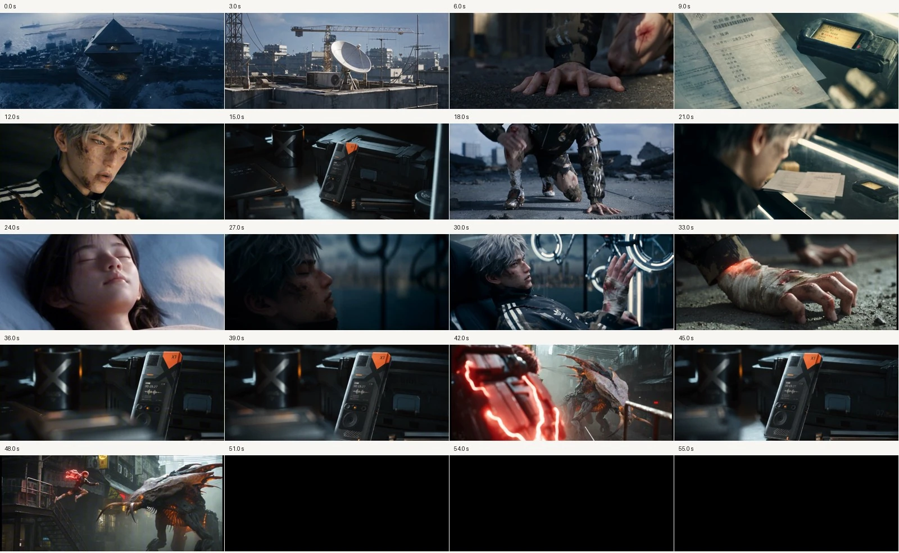

组织镜头、调整节奏与音乐，让作品经过完整观看与复查。
结合完整《陆川_v1》，理解镜头顺序如何安排信息、反应与等待。

选取可用区间并组织镜头，让每次导入、修剪和移动都有叙事理由。
保持其他条件一致，比较一个切点或停顿怎样改变理解与节奏。
先判断现有素材能否解决问题，再为缺少的信息或动作确定补镜任务。
明确配乐需求，完成Suno生成，再让音乐与画面节奏配合。
核对画幅、30fps素材、结尾与声音接缝，再完整复看实际输出文件。
在个人拉片网站记录出处、时间、观察与解释，让观看积累为方法。